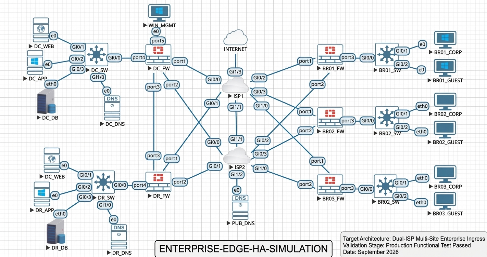

A production-tier architecture demonstrating dual-ISP failover and dynamic boundary segmentation.
This deployment validates a highly available corporate infrastructure designed to rule out single points of failure at the enterprise routing layer and apply hard micro-segmentation policies across internal environments. The simulated design flawlessly interconnects a primary Corporate Data Center (DC), a synchronized Disaster Recovery (DR) hot-site, and three remote Branch Offices.
Comprehensive addressing scheme detailing edge interfaces, internal server zones, and infrastructure resolvers:
| Device Name | Interface | Assigned IP Address | Subnet Mask | Role / Connection |
|---|---|---|---|---|
| DC_FW | port4 |
10.10.0.1 | 255.255.255.0 | LAN Gateway Edge |
| DC_SW | Gi0/0 |
10.10.0.2 | 255.255.255.0 | Core Switching Uplink |
| DC_WEB | e0 |
10.10.0.10 | 255.255.255.0 | Production Web Server |
| DC_APP | e0 |
10.10.0.11 | 255.255.255.0 | Enterprise Application Tiers |
| DC_DB | eth0 |
10.10.0.12 | 255.255.255.0 | Relational Production Database |
| DC_DNS | e0 |
10.10.20.10 | 255.255.255.0 | Internal Service DNS Core |
| PUB_DNS | e0 |
8.8.8.8 | 255.255.255.252 | Public Infrastructure Resolver |
Verified structural routing pathways, core zones, and firewall network boundaries mapped out during data-plane validation checks:

Exported CLI configurations running across core provider routers, firewalls, and distribution switches:
hostname ISP1
interface GigabitEthernet0/0
description Link to DC_FW (port1)
ip address 198.51.100.1 255.255.255.252
no shutdown
interface GigabitEthernet0/1
description Link to DR_FW (port1)
ip address 198.51.100.5 255.255.255.252
no shutdown
interface GigabitEthernet0/2
description Link to BR01_FW (port1)
ip address 198.51.100.9 255.255.255.252
no shutdown
interface GigabitEthernet0/3
description Link to BR02_FW (port1)
ip address 198.51.100.13 255.255.255.252
no shutdown
interface GigabitEthernet1/0
description Link to BR03_FW (port1)
ip address 198.51.100.17 255.255.255.252
no shutdown
interface GigabitEthernet1/3
description Upstream Internet Access Backbone
ip address 11.0.0.1 255.255.255.252
no shutdownconfig system interface
edit "port1"
set alias "ISP1-WAN"
set mode static
set ip 198.51.100.2 255.255.255.252
set allowaccess ping
next
edit "port2"
set alias "ISP2-WAN"
set mode static
set ip 203.0.113.2 255.255.255.252
set allowaccess ping
next
edit "port3"
set alias "HA-SYNC / DR-LINK"
set mode static
set ip 10.255.0.1 255.255.255.252
set allowaccess ping
next
edit "port4"
set alias "LAN-INLINE"
set mode static
set ip 10.10.0.1 255.255.255.0
set allowaccess ping https ssh
next
edit "port5"
set alias "MGMT"
set mode static
set ip 10.10.99.1 255.255.255.0
set allowaccess ping https ssh
next
end
config router static
edit 1
set gateway 198.51.100.1
set device "port1"
set distance 10
next
edit 2
set gateway 203.0.113.1
set device "port2"
set distance 20
next
endhostname DC_SW
vlan 10
name SERVERS
vlan 20
name INFRA_DNS
vlan 99
name MANAGEMENT
exit
interface GigabitEthernet0/0
description Link to DC_FW (port4)
ip address 10.10.0.2 255.255.255.0
no shutdown
interface GigabitEthernet0/1
description Link to DC_WEB
switchport mode access
switchport access vlan 10
no shutdown
interface GigabitEthernet0/2
description Link to DC_APP
switchport mode access
switchport access vlan 10
no shutdown
interface GigabitEthernet0/3
description Link to DC_DB
switchport mode access
switchport access vlan 10
no shutdown
interface GigabitEthernet1/0
description Link to DC_DNS
switchport mode access
switchport access vlan 20
no shutdown
ip route 0.0.0.0 0.0.0.0 10.10.0.1config system interface
edit "port1"
set alias "ISP1-WAN"
set mode static
set ip 198.51.100.6 255.255.255.252
next
edit "port2"
set alias "ISP2-WAN"
set mode static
set ip 203.0.113.6 255.255.255.252
next
edit "port3"
set alias "DC-SYNC"
set mode static
set ip 10.255.0.2 255.255.255.252
next
edit "port4"
set alias "DR-LAN"
set mode static
set ip 10.20.0.1 255.255.255.0
next
endhostname DR_SW
vlan 10
name DR_SERVERS
vlan 20
name DR_DNS
exit
interface GigabitEthernet0/0
description Link to DR_FW (port4)
ip address 10.20.0.2 255.255.255.0
no shutdown
interface GigabitEthernet0/1
description Link to DR_WEB
switchport mode access
switchport access vlan 10
no shutdown
interface GigabitEthernet0/2
description Link to DR_APP
switchport mode access
switchport access vlan 10
no shutdown
interface GigabitEthernet0/3
description Link to DR_DB
switchport mode access
switchport access vlan 10
no shutdown
interface GigabitEthernet1/0
description Link to DR_DNS
switchport mode access
switchport access vlan 20
no shutdown
ip route 0.0.0.0 0.0.0.0 10.20.0.1hostname BR01_SW
vlan 100
name CORP_USERS
vlan 200
name GUEST_USERS
exit
interface GigabitEthernet0/0
description Uplink to BR01_FW (port3)
ip address 10.101.0.2 255.255.255.0
no shutdown
interface GigabitEthernet0/1
description Connection to BR01_CORP PC
switchport mode access
switchport access vlan 100
no shutdown
interface GigabitEthernet0/2
description Connection to BR01_GUEST PC
switchport mode access
switchport access vlan 200
no shutdown
ip route 0.0.0.0 0.0.0.0 10.101.0.1ISP1 and ISP2). Outages trigger instant, deterministic failover events to guarantee infrastructure uptime.DC_DNS / DR_DNS) to shield production infrastructure assets from public scanning grids.CORP_USERS and GUEST_USERS VLANs using Cisco IOS-XE switches to prevent lateral movement.DC_WEB, DC_APP, DC_DB) into strictly monitored zones with limited ingress permissions.